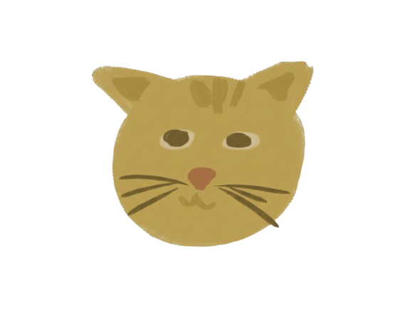
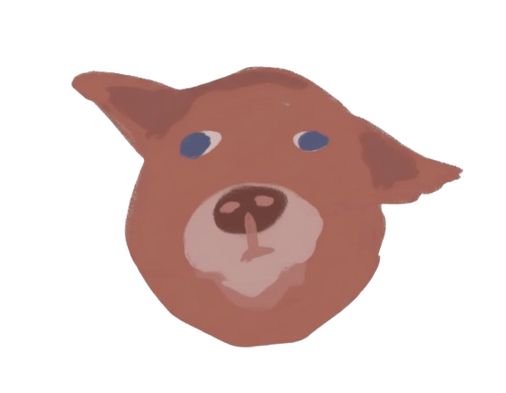

Welcome to your space!
Words I always want you to remember

Hi dumdum! Welcome to ur safe space! Hehe I call this ur safe space cuz I want u to go here everytime u feeling sad, or when u miss me:> and im sorry if medj messy to hehe it’s my first time making a website, and I’m really happy that I get to work on this for u!
CLICK THEM!
 "Watch me!" I wanna sing this for u but ion have a good voice hehe
Sorry again, if this kinda messy hehe as much as I want to put interactable elements here, idk how pa hihi
But please know that every word here is a piece of how much you mean to me.

Your Song
Artist — Album
Your Favorites 💕
These are some of the things u like (well, i didn't include all of them), but they made me think of u—and I just want to appreciate them because it’s all about YOU ^____^
Just like ur favorite fruit, u’re sweet in your own special way! Every time I think of u, I always see that warm shade of yellow. It's soft and comforting, just like u:>. I’ve always liked mangoes, but I never expected that I’d end up craving them every time I start missing u. Yes, I love strawberries too, but it feels complete only when I mix them with ur favorite flavor now, just like how everything feels right when I'm with you:>
I’ll never get tired of admiring ur artworks, dum. Ever. That’s where my feelings for u first started. I’ll always be ur number one fan, promise hihi and every time I see your art, it brings me back to those days when I used to admire u quietly from afar hehe and now??? I get to see all ur pieces up close for free huhu I get to hype you endlessly, and even draw alongside u. I feel so lucky dum. I hope u keep creating more and more… I can’t wait to fall in love with every new artwork u make.
When u first told me u were into perfumes, I found it rllyyy cute. I only used whatever was at home, but the way u talked about scents made me curious too. And when I finally got to smell YOUR perfume on you… waaaaaaaaaah I never wanted to stop sniffing u! U’re just so so bangooo dum hoho but honestly, my favorite perfume is whatever u’re wearing…tho ur natural skin scent will always be my number one :>
I’m really glad u were the one who introduced me to so many games. I honestly never thought I’d end up enjoying all these different cool worlds, but u made it fun. Thank u for sharing all of that with me. U’ve never failed to be my perfect duo after all heheh before, I could only play with u sa Genshin, but now?? I get to play with you anytimeeeee! and it makes everything feel a little more special. I can’t wait to try even more games with u, dum… it’s always better when it’s with u hihi
I was never really drawn to the color of red… until I met u:> I can see how warm and tender the shade feels to u, and even with the way u see colors, u still chose it as your favorite. And that made it special to me. Because I realized how beautifully it blends with everything, the same way u fit effortlessly into my life:>> I love how u admire characters dressed in red like spidey hehe and how that shade always catches ur eyes. And now, I want you to know that for me, red has become the color of my love for you. I love you so so much dum!
Where My Soul Found Peace
Hi dum! I've been asking myself, "how did I end up loving you this much?"
Honestly, I can’t even explain it. Cuz when you feel it’s real, you just feel it, diba? Pero with you, it’s different. I didn’t just fall in love with you...
I fell inlove with your soul, dum.
I fell inlove with the way you think—yung mga thoughts mo na minsan ang lalim, minsan sobrang random, pero laging may meaning.
I fell in love with how you act—yung maliliit mong galaw na minsan di mo napapansin, pero sakin, sobrang big deal.
I fell in love with your effort—kahit sobra o simple lang, ramdam ko yung sincerity palagi.
I fell in love with how you look—yes, your charming face, you eyes and also your smiles that just melt me.
I fell in love with how you make me laugh—yung tawa na galing sa puso.
I fell in love with how you make me cry—'cause you matter that much.
I fell in love with how you open up your stories, your problems, your wins, and even your weird facts na ikaw lang nakakaalam.
I fell in love with how you face life—calm minsan, messy minsan, but it's still you.
I fell in love with how you handle me—my moods, my fears, my chaos.
And most of all, i fell in love with how you express your love—kahit sa simpleng ways mo, ramdam na ramdam ko.
Mahal kita kasi ikaw ka. And that's more than enough for me.
You're the best example of someone extraordinary.
But I know na you're more than that. Like im always saying, mas malaki ka pa sa universe. And if meron mang mas malaki pa sa universe, then you’re way beyond it. You're someone I can't ever EVER ever lose. As much as ayokong isipin mga negative "what ifs" sa utak ko, I can't help but think about it. Kasi if ever mawala ka sakin, parang hindi ko na kaya mag start pa ulit. It's terrifying. And i can't lose that dum. I can't lose you. Iba ka. I didn’t just fall in love with you just because you’re special. I fell in love with you because you’ve always been that way. Effortlessly you. You never had to try too hard; you just are.
I realized I found my forever home when I noticed how my mind would randomly hum your name every time naliligaw ako sa mga deep thoughts. It’s like, even in silence, you’re always there...quietly present in the background of everything I do. Di ko rin alam bakit, but you’ve never left my mind. Not even for a moment. Maybe it’s because I truly need you in ways I can’t always explain.
You’ve become my safe place. My home. No matter how far I wander, or how lost or confused I feel, it’s always you that I return to. Ikaw palagi yung binabalikan ko. Because with you, I don’t have to hide the parts of me that feel broken and flawed. Alam ko kasi na they’ll never be judged, but only accepted and held safely by you. And that’s the kind of love I never thought I’d find. The kind that makes me feel seen, wanted, and at peace. Kaya kahit may insecurities ako 'til now, I still find strength with you. Dahil sayo, I found more than just love. I found the one person who feels like home. And yes, that’s you. Only you.
I want you to know that I’ll always love you. Not just for who you are today, but for every version of you na nag eexist. I can handle all of it. Your highs, your lows, your mess, and even the things that tries to drag you down. None of that scares me, dum. What truly scares me is a life without you in it. Because without you, all my hope and courage wouldn’t make sense anymore. I don’t care if sometimes you give or show me the parts of you that feel tired or lost. I’ll still choose to love you through it all. Even when things get complicated, hahakbangin natin ‘yan, dahan-dahan.
And yes, my love for you is boundless and unconditional — it has no limits, no conditions, and walang ending. You don’t have to be perfect for me to stay. You just have to be you, Stephen. Because that’s already more than enough.
And maybe that’s why I cry sometimes. Not out of pain, but because I never knew I could love someone this deeply. You mean more to me than words will ever be able to explain.
You are my peace dum.
And I don't describe peace as something quiet, calm, or gentle just because ganun pinaparamdam mo sakin. I describe it as something messy too—something real. Yes, it's sometimes a chaos, but it's our kind of chaos. It’s about arguing until we end up laughing, crying until we feel lighter, and letting out every tangled, ugly, and honest emotion without fear of being left. Peace, to me, is knowing I can be the most unfiltered version of myself. Loud, stubborn, naughty, clingy, silly, angry, shy—and you'll still look at me like im worth choosing. Like I’m worth loving, even at my worst. My peace doesn't have to be perfect naman eh, as long as it's always alive. And that is YOU. Ikaw yung safety ko. The one I run to when everything feels too loud or too much. Yung alam kong kahit gaano kagulo, pwede ako sayo. No need to explain, no need to hold back. I can just be me...and you’ll still stay. Or at least, i hope you do—forever. :(
I want u to know that there will be boring days, plain days, days na walang kilig. There will be times na parang paulit-ulit nalang, times na we’ll feel stuck or tired or down. Actually, dumaan na tayo jan, ilang beses na. But even in those seasons, mahal na mahal pa rin kita. I didn’t choose you just for the happy parts. I chose you dahil handa ako sa buong journey. Ups, downs, and everything in between.
To be honest, hindi ko ramdam ung hirap kasi ang sarap ipaglaban ng pagmamahal ko sayo. Ang gaan sa puso kahit may bigat, kasi worth it ka. Worth it tayo. Yes, napapagod din tayo minsan. Tao lang. Pero i want you to know na kahit anong pagod, kahit anong lungkot, kahit ilang away pa yan. Hinding hindi ko kayang sumuko sayo. Satin. Kasi mahal kita. buong buo.
And dum… I’m sorry.
I’m sorry for the arguments, for the times I let my emotions take over, and for the moments I made you feel like my words didn’t match my actions. Alam ko naman I’ve made mistakes. Maybe not in the way you think, but through the small things that hurt without me realizing it. Alam ko din how much that affected your trust, and I can’t blame you if you’re struggling to see me the same way, even if it really hurts marinig yun sayo.
The past few months haven’t been easy for us. Pareho tayo na-frustrate, pareho tayo nasaktan. And whenever iniisip ko na ako yung isa sa mga reasons why you started doubting the love we built — ang sakit. Kasi ayokong maramdaman mo na hindi ka safe sakin, o na magduda ka kung totoo pa ba ako sayo. I didn't enter to this relationship to look clean. Pumasok ako dito for you to know the real me. And I'm glad you've met me in my best version. Well, not the best, but yung ako na willing mag improve palagi.
I know I can’t fix everything with words, especially ngayon kasi distance makes it harder. But words are all I have at the moment, and I’m giving them to you with my whole heart. Hindi ko 'to basta basta lang ginawa. Every word I say comes from the part of me that still believes in us. Alam ko naman na for you, actions speak louder than words. And you’re always right. But I want you to remember that when the distance gets in the way, my words become my actions. This is how I hold you close even from afar.
Wala man ako jan para yakapin ka when you feel distant, but I hope through this, you can still feel my warmth. Kasi kahit gaano kalayo, I never stopped choosing you. I never stopped trying to reach you. I never stopped believing that what we have is worth every effort, every tear, every fight.
I know trust isn’t easy to rebuild, but I’ll do it with patience, with honesty, and with consistency. One step at a time, I’ll earn back what we lost. And pag sinasabi ko na I’ll prove it through actions, I mean it — not with big gestures, but through small, constant ways of loving you, every single day.
Kahit ilang months pa lang tayo, my feelings for you are real. I know sometimes it might sound too much or too soon, but I’m serious about us. I didn’t choose you for convenience, or for the thrill. Pinili kita kasi nakikita ko yung future ko with you — with a love na raw, imperfect, but real. And I know, maybe you’ve heard words like these before, from people who once made you feel special too. Pero sana hindi mo ako i-compare sa kanila. I’m not here to repeat their promises. I’m here to prove mine. I can’t and won’t ever play with your heart, dum. That’s not who I am.
I just want us to go back to feeling connected again. Ayoko maramdaman mo na parang malayo ako, or na nag-iba na ako. I’m still the same person who fell in love with you in the most genuine way. I’m still the same girl who gets scared of losing you, who wants nothing but to make you feel safe and loved.
So please, don’t shut me out. Let me stay. Let me prove to you, slowly but surely, that I can still be the partner you used to see. Maybe even better this time. Because I’m always willing to learn and grow. Everything I do is a reflection of how deeply I love you.
Sometimes, I forget to tell you how thankful I really am. Thankful for the way you listen to me, for saying yes sa lahat ng requests ko even when I know you’re tired. Thank you for giving me everything I need. Not just things, but yung oras, effort, love, and care. You always put me first, even when life gets heavy, and I’ll never take that for granted.
Thank you for always being there for me. For standing up for me when I can’t do it myself. For making me feel safe and protected. You’ve shown me what it means to have someone who doesn’t just stay, but someone who chooses to stay.
I’m also really thankful kasi you never let my mistakes pass unnoticed. I know it's not good na makita mo lang lagi mga mali ko. But somehow, you always notice when I’m wrong, hindi para ipahiya ako, but to help me grow. Nakikita ko naman yun. You teach me how to fix things and how to do better. You correct me with patience, and sobrang naaappreciate ko yun.
Before you, alam kong nakita mo sa sarili ko na I used to be the type who just stayed quiet even when I got hurt. I never really defended myself pag hindi ko talaga kaya. I thought being kind meant keeping everything in. But you saw that part of me. The part that was too scared to speak and too afraid to stand up. Yet, you didn’t judge me. Mas tinuruan mo pa ko lumakas. You taught me na kaya ko magsalita. Na meron akong worth. And that I deserve respect too. You made me see that it’s okay to be soft, but it’s also okay to fight for myself. You didn’t just love me. You helped me find myself again. You made me realize na I’m capable, na I’m strong, na I can be more than I ever thought I was.
And you’re not just my boyfriend. You’re my safe place, my comfort, and my biggest supporter. And even when it gets hard to show it, I’ll always find my way back to you. Every time.
Always and only you, dum.
I love you.